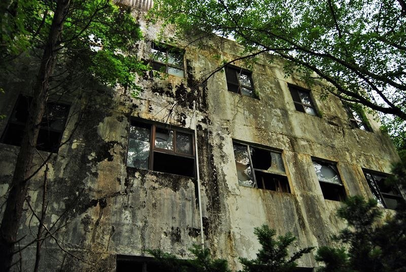
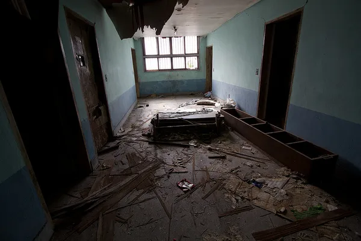
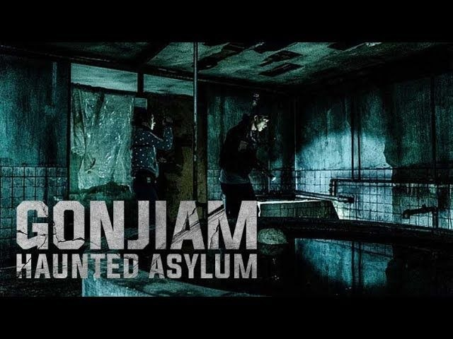

Заброшенная психиатрическая больница Гонджиам в Южной Корее заслуженно носит репутацию одного из самых жутких и мистических мест планеты, обросшего десятками городских легенд.
Психиатрическая больница Гонджиам (Gonjiam Psychiatric Hospital) — культовое «проклятое» место
Южной Кореи. В 2012 году канал CNN включил её в список «7 самых жутких мест на планете», что
превратило заброшенное лечебное учреждение в мировую легенду.
Комплекс располагался в городе Кванджу (провинция Кёнгидо), всего в часе езды от Сеула. Долгое
время трёхэтажный бетонный корпус, затерянный среди лесистых холмов, притягивал исследователей
заброшенных мест, блогеров и охотников за привидениями со всего света.
Информация
- Дата постройки: Декабрь 1992 года
- Годы работы: 1992–1996 гг.
- Статус: Снесена в мае 2018 г.
- Причина закрытия: Экономические и коммунальные проблемы

История больницы
Открытие
Частная психиатрическая клиника Намсон (позже известная как Гонджиам) открылась в 1992 году. Её основатель, врач Хон Ду Пё, возвёл трёхэтажный корпус в изолированной лесной зоне для тишины и покоя пациентов. Оборудованный стационар принимал больных со всей провинции Кёнгидо.
Закрытие
Спустя четыре года работы больница столкнулась с убытками и выходом из строя канализационной системы. Городские власти требовали постройки новых очистных сооружений. Но из-за отсутствия средств и накопившихся долгов владельца клинику закрыли. Главврач уехал в США, пациентов перевели в другие учреждения, а здание бросили вместе с мебелью и оборудованием.
Мировая известность
Заброшенный корпус годами разрушался от сырости и вандалов. Публикация CNN в 2012 году привлекла к Гонджиаму внимание мировой общественности: место заполнилось легендами о безумном докторе и призраках пациентов, а к зданию хлынул поток туристов и исследователей паранормального.
Снос и охрана
Выход успешного одноимённого корейского хоррора в 2018 году вызвал небывалый всплеск нелегального туризма, вызвавший протесты местных жителей из-за шума и мусора, что оставляли приезжие. Владелец участка проиграл суд по запрету фильма. По итогу в мае 2018 года владелец земли продал участок, после чего заброшенное здание было полностью снесено.

Мрачные комнаты
Заброшенные палаты и пугающая атмосфера клиники стали главным источником вдохновения для кинематографистов.

Эффект присутствия
Съемки в стиле «найденной плёнки» (found footage) создали максимальный реализм и заставили зрителей поверить в истинность происходящего.
Фильм «Гонджиам» (2018)
Ключевую роль в мировой популярности локации сыграл фильм ужасов режиссера Чон Бом Сика. По его вымышленному сюжету больница была открыта в 1960-х годах и закрылась 26 октября 1979 года после массового самоубийства 42 пациентов и исчезновения главврача. Группа видеоблогеров отправляется туда для проведения прямой трансляции.
Картина стала кассовым хитом и навсегда закрепила за лечебницей статус главной городской легенды Южной Кореи.